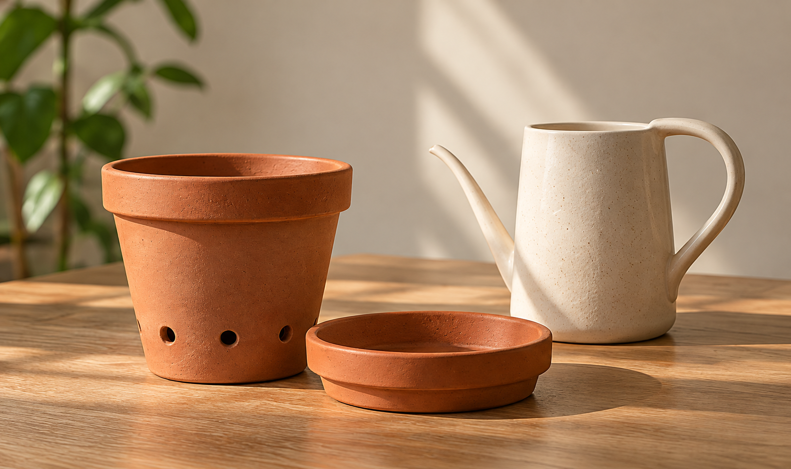

Det behøver du
Du kommer langt med få ting. Her er det mest nødvendige udstyr til en god start - og lidt, der kan vente.

Nødvendigt
Plantepotte med drænhuller
Lader overskydende vand løbe fra.
Underskål
Opsamler vand, så dine overflader forbliver tørre.
Vandkande
Gør det nemt at vande i den rette mængde.
Kan vente
Plantejord
Behøves først, når du skal omplante.